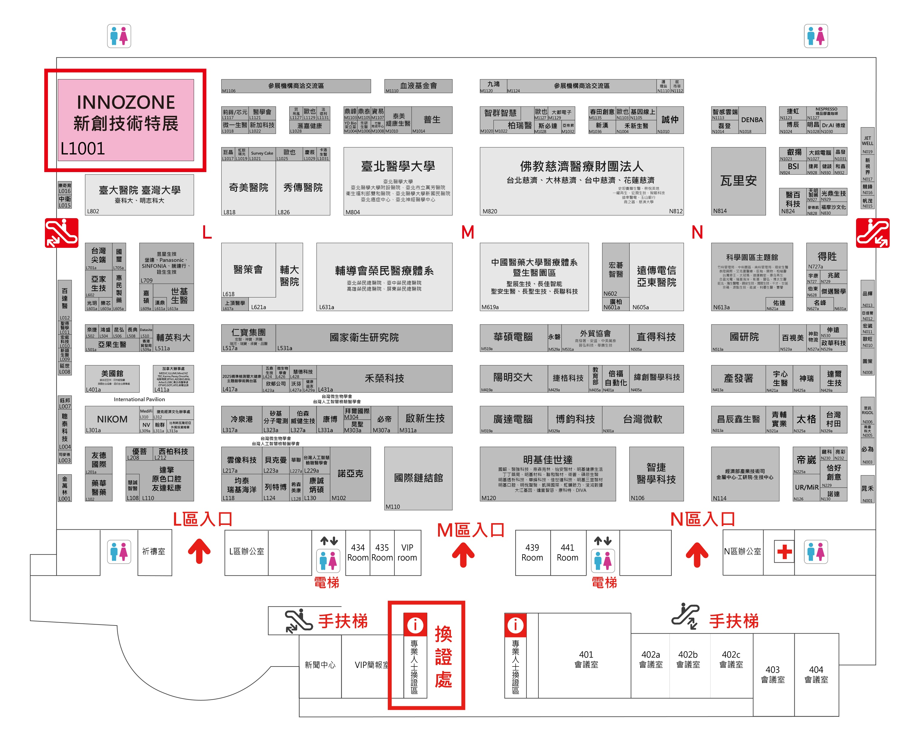

圖： 得美醫創將於12/4~12/7參加2025台灣醫療科技展。
我們的展位設於 4 樓 新創技術特展 L1001的C29攤位 ，展出 GPSR_M2 plus 舒感電漿活膚儀。 新機型採用了獨家的「控溫電漿技術」，確保在提供高效率滅菌的同時，維持極低的溫度，保障治療過程的舒適性和安全性。該技術已在國內數個大型醫院進行過臨床前測試，結果顯示對慢性、感染性傷口的癒合速度有顯著促進作用。
我們誠摯地邀請您 在 2025 年 12 月 4 日至 7 日 撥冗蒞臨 台北南港展覽館一館 4 樓 INNOZONE C29展位 讓我們攜手打造一個更智慧、更具人性化的醫療未來。